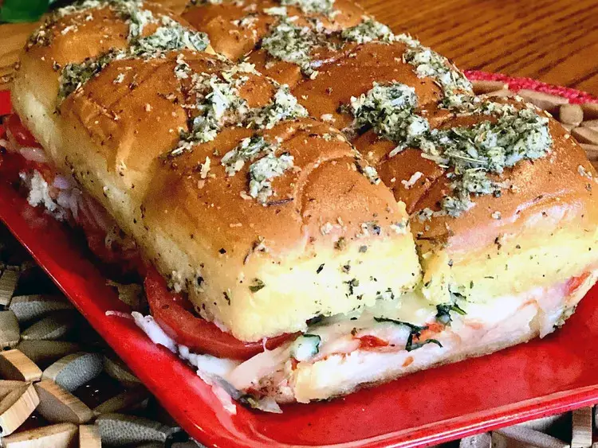

Vegetarian Sliders

Description
These sliders are a quick and easy vegetarian appetizer or main dish. They are filled with gooey mozzarella cheese, tomatoes, basil, and garlic.
Ingredients
- 1 (12 count) package Hawaiian bread rolls (such as King's®)
- ½ cup marinara sauce
- 8 ounces grated mozzarella cheese
- 3 Roma tomatoes, sliced
- ¼ cup chopped fresh basil
- ¼ cup butter, melted
- 2 tablespoons grated Parmesan cheese
- 2 cloves roasted garlic, finely minced
- 2 teaspoons Italian seasoning
Steps
- Preheat the oven to 375 degrees F (190 degrees C). Grease a 9x13-inch pan.
- Preheat the oven to 375 degrees F (190 degrees C). Grease a 9x13-inch pan.
- Combine melted butter, Parmesan cheese, garlic, and Italian seasoning in a bowl; stir to combine. Brush over the tops of the sliders.
- Combine melted butter, Parmesan cheese, garlic, and Italian seasoning in a bowl; stir to combine. Brush over the tops of the sliders.